A ferramenta de pedido de compra foi desenvolvida para otimizar e automatizar o
processo de aquisição de
materiais e produtos dentro de uma organização. Essa solução não só facilita a criação e gestão de
pedidos de compra, mas também fornece uma gama abrangente de análises e relatórios que são essenciais
para a tomada de decisões estratégicas. Clique nos tópicos listados abaixo, para entender sobre esta
importante ferramenta e suas funcionalidades.
+Configuração no cadastro dos produtos
Parametros iniciais no cadastro de produtos.
Para que um produto possa compor um pedido de compra, é preciso que na Guia
Classif, a seguinte opção esteja
marcada no cadastro.
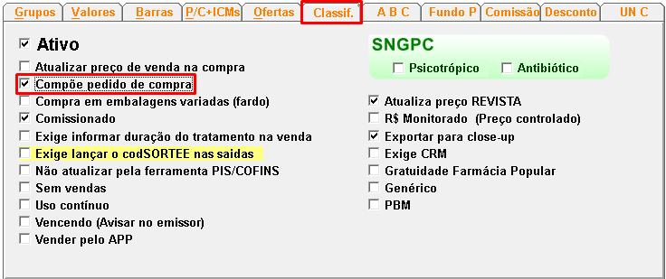
Guia Valores: apresentará informações referentes ao pedido de
compra.
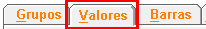
- Estoque mínimo: É a quantidade mínima de um produto que deve
ser mantida em estoque
para garantir a continuidade das operações e evitar rupturas. Serve como um colchão de segurança
para lidar com variações na demanda ou atrasos no fornecimento.
- Estoque múltiplo: Refere-se à quantidade de vezes que o
estoque mínimo é suficiente
para atender à demanda durante o tempo de reposição. Em outras palavras, é um multiplicador do
estoque mínimo que determina a quantidade total a ser encomendada quando o nível de estoque atinge o
ponto de reposição.
- Lote econômico:Também conhecido como EOQ (Economic Order
Quantity), é a quantidade
ideal de um produto que deve ser comprada de uma só vez, a fim de minimizar os custos totais
relacionados ao estoque, como custos de pedido e custos de armazenamento.
- Dispara lote econômico: É o ponto em que o nível de estoque
atinge o valor do
estoque mínimo multiplicado pelo estoque múltiplo, sinalizando a necessidade de realizar um novo
pedido para reabastecer o estoque na quantidade do lote econômico.
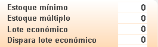
+Filtro para um novo pedido
A tela de criar novo pedido permite ao usuário trabalhar com diversas configurações e filtros, de modo que possa otimizar a análise.
Para iniciar um pedido de compras, clique no ícone Novo Pedido. Será exibida a tela de configuração.
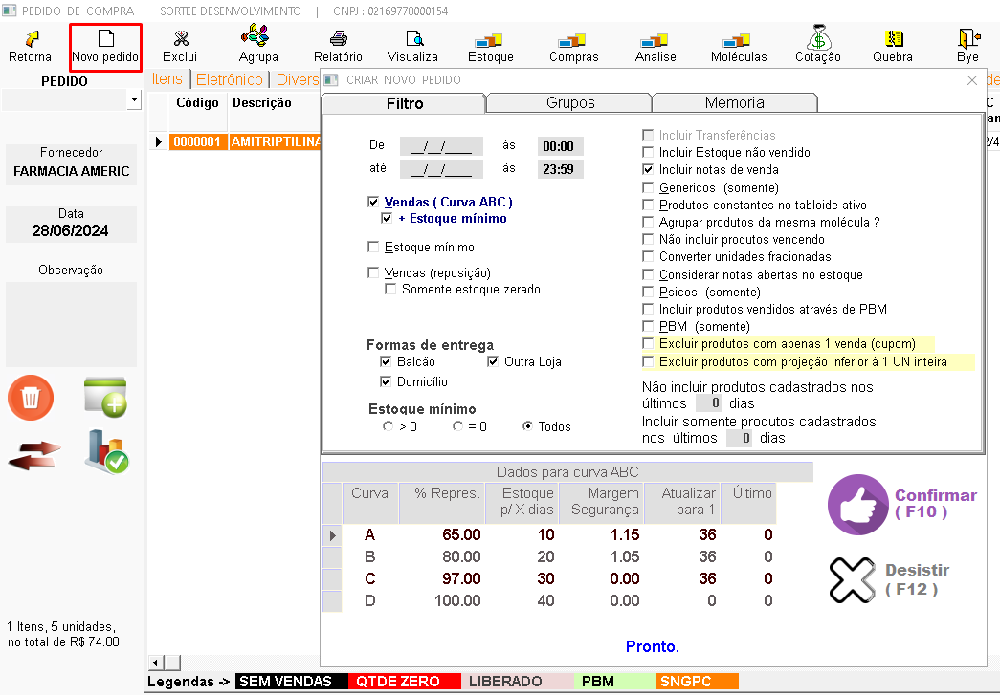
Período
É o intervalo entre as vendas que o usuário deseja analisar, para que o sistema sugira uma demanda de produtos a serem repostos no estoque.
Tipo de análise das vendas
Dentre as mais utilizadas, a curva ABC é a que proporciona um resultado mais preciso das informações, levando em conta o estoque, as unidades vendidas e o mínimo para o período estabelecido. Porém, o usuário deverá se atentar para as variações de demanda e sazonalidades, como, por exemplo, estações, onde no inverno temos o aumento dos produtos antigripais, e feriados prolongados, como o carnaval, devido ao aumento de produtos relacionados ao consumo excessivo de bebidas alcoólicas.
Quando relacionada a curva ABC com a opção +Estoque Mínimo, o sistema levará em consideração o cadastro do produto, quanto à opção "Estoque Mínimo" ajustada na tela de valores, sugerindo que, se o produto em questão não tiver estoque suficiente, será ajustado no pedido ao mínimo pré-estabelecido no cadastro.
No pedido, existem ainda as opções de "Vendas por Reposição" e de considerar somente o estoque mínimo cadastrado no produto.
Opçoes de filtro para criação de pedido:
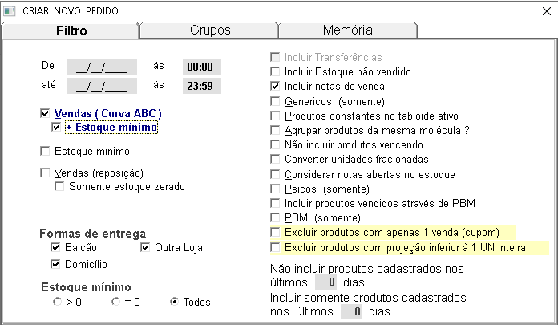
- Vendas (reposição) e somente estoque zerado:
Selecionando esta opção, serão filtrados somente os itens que tiveram vendas conforme o período informado.
- Somente estoque zerado:
Marcando esta opção, ela irá filtrar os itens vendidos, porém serão inclusos no pedido apenas os itens com estoque 0 (zero).
- Formas de entrega:
Filtra os itens conforme o tipo de entrega, podendo ser balcão, domicílio ou executadas em outra loja.
- Estoque mínimo:
Filtra os produtos conforme o estoque mínimo ajustado no cadastro.
- Incluir transferências:
Filtra os itens que tiveram saídas executadas por notas de transferência entre matriz e filiais.
- Incluir estoque não vendido:
Filtra os produtos que não tiveram vendas no período.
- Genéricos (Somente):
Filtra os itens marcados no cadastro como genéricos.
- Produtos constantes no tabloide ativo: Filtra os produtos que estão vinculados em tabloides.
- Agrupar produtos da mesma molécula?:
Esta opção é específica para produtos genéricos, onde temos produtos com a mesma molécula + apresentação, de laboratórios distintos. Neste caso, o sistema vai realizar toda a projeção dos produtos agrupados, mas definirá a compra pela molécula principal, conforme cadastrada nos itens.
- Não incluir produtos vencendo:
Filtra os produtos que estão marcados no cadastro como "vencendo".
- Converter unidades fracionadas:
Ajusta os valores e quantidades conforme a fração do cadastro.
- Considerar notas abertas no estoque:
Remove do pedido os itens que estão inclusos nas notas em aberto.
- Psicos (Somente):
Filtra somente produtos classificados como psicotrópicos.
- Incluir produtos vendidos através de PBM:
Filtra os produtos que foram vendidos através de operadores logísticos (TRN, ePharma, Vidalink, Orizon, etc.).
- PBM (Somente):
Filtra os produtos que estão classificados como PBMs no cadastro.
- Excluir produtos apenas com uma venda (cupom):
Filtra produtos que foram vendidos somente 1 (uma) vez, mesmo que em quantidade maior.
- Excluir produtos com projeção inferior a 1 unidade inteira:
Filtra os produtos em que a quantidade vendida no período for menor que 1 caixa fechada (fracionados no cadastro).
- Não incluir produtos cadastrados nos últimos dias:
Filtra os produtos que têm cadastro recente e não os inclui no pedido.
- Incluir somente produtos cadastrados nos últimos dias:
Filtra produtos cadastrados recentemente, incluindo-os no pedido.
+Dados para curva ABC
Quando selecionado a opcao de CURVA ABC nos filtros iniciais do pedido de compra, irá aparecer a parte em que podemos configurar,
onde os produtos, serão analisados e organizados dentro do pedido, de acordo com sua classificão, este é um
método de gestão de estoque que categoriza os itens com base em seu valor financeiro e importância
para o negócio.
O que Significa cada classificação:
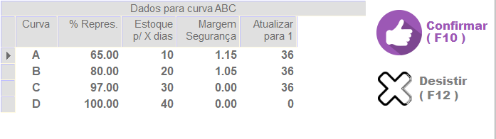
- Curva A: São produtos de alto giro com vendas diárias
significativas. Portanto, é crucial manter uma quantidade mais substancial desses produtos em estoque.
- Curva B: Similar à Categoria A, esses produtos têm demanda
diária, porém apresentam um giro de estoque um pouco menor.
- Curva C: Inclui os produtos com baixo giro de estoque e
compras esporádicas.
- Curva D: Para estabelecimentos com estoque mais amplo, a
Categoria D pode ser relevante. Abrange medicamentos e produtos vendidos por encomenda, representando uma parcela menor
nas vendas do estabelecimento.
Percentual de representação
Será onde o comprador, ira informar qual a % de representação do estoque, em que cada classificação sera levado em consideração para o calculo dos produtos pela curva ABC.
Neste exemplo da imagem, a sugestão inicial de compra para cada curva será a seguinte:
- Curva A: 0% até 65%, ou seja, 65% dos produtos.
- Curva B: 66% até 70%, ou seja, 5% dos produtos.
- Curva C: 71% até 97%, ou seja, 26% dos produtos.
- Curva D: 98% até 100%, ou seja, 2% dos produtos.
Observação: O responsável pelas compras, devera se atentar a diversos fatores, que influenciam em um pedido de compras, pricipalmente a logística dos fornecedores, que podem variar de região para região, na composição da curva ABC, tendo assim um pedido mais preciso e correto.
Estoque para X Dias
Define a projeção de estoque para cada produto, classificando-o de acordo com
sua relevância e
estabelecendo um período de cobertura.
O sistema utiliza os dados de vendas do período informado, para calcular a
demanda de cada produto. Com base neste cálculo e no período de cobertura definido pelo usuário, o sistema ajustará
a quantidade ideal de estoque a ser mantida de acordo com os dias informados, garantindo assim a disponibilidade dos produtos para
atender à demanda prevista.
Margem de segurança
Essa funcionalidade permitirá que o usuário, estabeleça um percentual adicional de
estoque para cada produto, visando garantir a disponibilidade do item em caso de aumento inesperado na demanda. Ao definir uma
margem de segurança, você estará criando um estoque extra, que atuará como uma proteção contra
possíveis flutuações nas vendas.
Exemplo: Se o sistema sugerir a compra de 100 unidades de um
determinado produto e o usuário configurar uma margem de segurança de 1.15, o sistema automaticamente calculará e adicionará 15
unidades extras ao pedido (15%). Dessa forma, você terá 115 unidades em estoque, o
que pode ser suficiente para atender a uma demanda maior do que a prevista inicialmente.
Atualizar para 1
O sistema atualiza para 1 unidade a compra de algum item que teve venda dentro
dos dias informados.
Exemplo: O item que teve venda dentro de 36 dias da
classificação C e D o sistema
irá atualizar para comprar 1 unidade do item.
Esta opção é recomendada para utilizar somente nas curvas C e
D.
+Grupos
A aba "Grupos" tem como objetivo principal filtrar e selecionar os produtos que farão parte de um
novo pedido, de forma a otimizar o processo de criação e garantir que apenas os itens desejados
sejam incluídos.
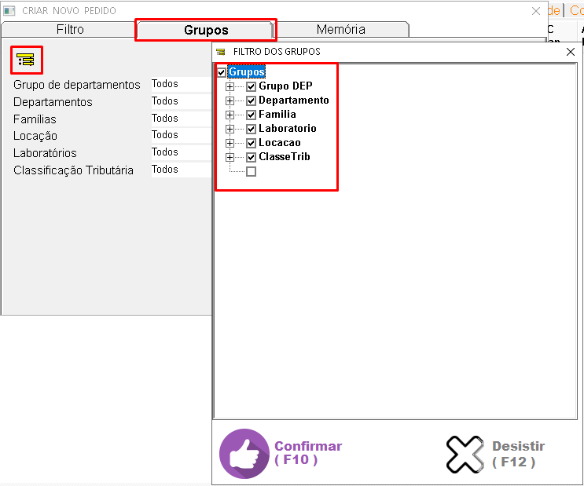
Ao acessar essa aba, o usuário encontra uma lista de critérios de
classificação dos produtos em seu cadastro, como:
- Grupo de departamentos: Agrupa os produtos por áreas
específicas da empresa, como medicamentos, perfumaria e etc. sendo este, responsável por uma uma classificação macro nos produtos
- Departamentos: Subdivide os grupos de departamentos em categorias mais específicas (genéricos, Similar, eticos, fraldas, leites, etc...).
- Famílias: Resposável por uma subclassificação além de agrupar os produtos com características semelhantes, como medicamentos para dor, produtos de higiene pessoal, etc...
- Locação: Indica a localizaçao de um determinado item em seu estoque (prateleiras, refrigerados, armario de controlados, etc...).
- Laboratórios: Indica o fabricante do produto.
- Classificação Tributária: Refere-se à classificação fiscal do produto para fins de tributação (ICMS, ST, ISENTO, ISS).
+Memória
A memorização de filtros foi incluída no sistema para facilitar a geração de pedidos frequentes, como os pedidos semanais de genéricos, éticos, similares, ou até mesmo pedidos de produtos não medicamentos que podem ser executados quinzenalmente, conforme a rotina de cada estabelecimento.
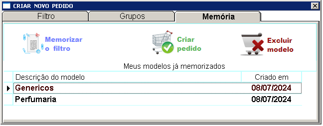
- Memorizar o filtro: Para que o sistema gere um modelo com base no filtro executado, para que otimize os proximos pedidos, o usuário podera renomear esta memorizaçao a fim de facilitar sua localização (ex.: "Pedido semanal para genéricos").
- Criar pedido: Selecione o modelo memorizado anteriorme para gerar um novo com base nos filtros deste modelo memorizado
- Excluir modelo: Permite a exclusão de um modelo memorizado.
+Visualizando e analisando o pedido gerado
Nesta tela temos o pedido gerado pelo sistema, através do método utilizado na configuração anterior.
- Serão exibidos os itens de acordo com as informações processadas. Note que cada item possui diversos dados que devem ser analisados pelo comprador. Cada coluna da tela mostra uma determinada informação, que poderá ser utilizada para a análise do pedido gerado.
- Dentre as mais utilizadas, temos: quantidade, preços, estoque, mínimo (gerado pela curva ABC ou pelo mínimo do cadastro de produtos) e classificação do mesmo quando gerado pela curva ABC.
Para que possa analisar os produtos processados pelo sistema, selecione o pedido em questão, pressione enter, para que sejam exibidos na tela.
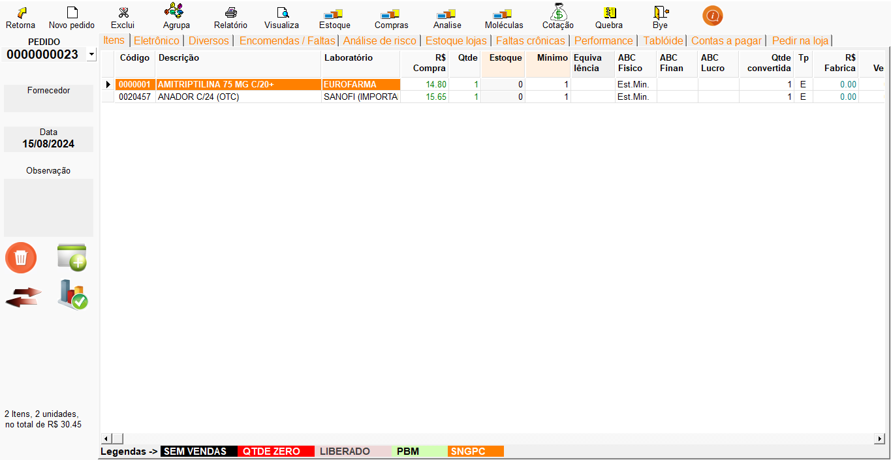
Opções no alto da tela que ajudam a compor esta análise:
- Agrupa: É possível executar a junção de mais de 1 pedido.
- Relatório: Gera um relatório impresso com as informações processadas.
- Vizualiza: Exibe na tela o relatório, para que possa ser exportado em diversos formatos ou até mesmo impresso.
- Estoque: Atualiza o saldo de estoque dos produtos no pedido selecionado.
- Compras: Exibe as últimas 10 compras do produto selecionado no pedido.
- Análise: Ao selecionar um produto e clicar neste ícone, será exibida a tela de análise do produto.
- Molécula: Caso o item selecionado tenha agrupamento de moléculas, todos serão exibidos na tela.
- Cotação: Executa uma cotação interna no sistema, de acordo com os dados de equivalências cadastrados.
- Quebra: Quebra o pedido por fornecedores, conforme cotação executada.
- : Exibe uma tela com os atalhos para otimizar comandos no pedido de compra.
NOTA:
As colunas na cor %R$ Compra, Qtde são campos editáveis
Opções no canto esquerdo da tela que ajudam a compor esta análise:
- : Selecione os itens que nao deseja manter neste pedido e clique neste icone.
- : Clique neste icone para incluir novos itens, que nao foram gerados pelo filtro utilizado ao criar um novo pedido.
- : Para transferir itens de um pedido para outro, clique neste icone.
- : Ao clicar neste icone e pressionar em seu teclado seta pra baixo, serão exibidas as operacoes financeiras do produto selecionado.
- No final da tela, serão exibidas legendas para as cores dos produtos, e seus significados.
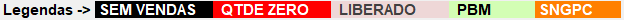
Obs:Quando o pedido for gerado pela curva ABC, informações do produto, como posição do item frente à
curva ABC ou seu estoque minimo, aparecem confonrme exemplo a seguir:
A/192/0.12
representa que o item
está na curva A, na posição 192, representando 0,12%.
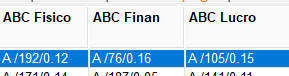
+Aba Eletrônico
No sistema, temos integrações com diversas empresas que fornecem produtos, tanto medicamentos quanto não medicamentos. Após a gerar e analisar de um pedido, o usuario poder enviá-lo e receber o retorno dessas empresas, informando se o pedido foi atendido ou não, e em casos de falta de produtos, conseguimos gerar um novo pedido a partir destas faltas.
Nesta próxima tela, é possível configurar para gerar um pedido eletrônico no formato de layout previamente solicitado pelos fornecedores.
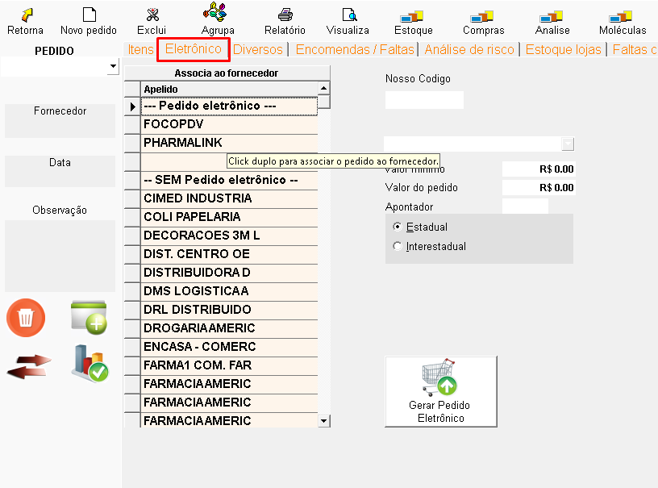
Para isso, selecione um fornecedor já existente na lista e dê um duplo clique para associá-lo.
- O sistema ira vicular o código da loja, previamente configurado pelo suporte.
- O valor total do seu pedido analisando se, ele atende ao valor mínimo estabelecido pelo fornecedor.
- Clique no botão "Gerar Pedido Eletrônico".
O sistema irá gerar o pedido de forma automática, e será salvo no caminho informado
na tela.
+Aba Diversos
A aba "Diversos" oferece uma série de opções e filtros que permitem
personalizar e refinar o
processo de geração de pedidos de compra. Essa aba é fundamental para garantir que o pedido
gerado atenda às necessidades específicas da farmácia e seja o mais preciso possível.
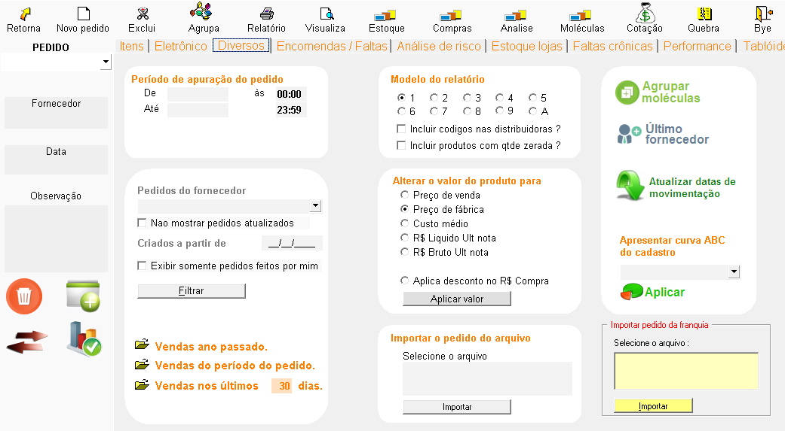
Como usar:
- Período de apuração do pedido: Mostra o período em que o
pedido foi gerado,
podendo ser alterado.
- Pedidos do fornecedor: Neste campo você consegue filtrar
o pedido por
fornecedor. Se você
clicar em vendas do ano passado, ele demonstra as vendas dos últimos 30 dias, porém, referente
ao ano
passado.
- Modelo do relatório: Neste campo você consegue
selecionar os diferentes modelos
de
visualização dos relatórios com produtos do pedido.
- Altera o valor do produto: Altera o preço de acordo com
a opção selecionada.
- Importar o arquivo do pedido: Importa um pedido de
compra de acordo com o
modelo do
sistema.
- Agrupar Moléculas: Serve para você agrupar produtos em
um mesmo fornecedor. Por
exemplo,
você compra um Anador com o fornecedor X e Y, porém, se você comprar o Anador com o fornecedor
Y, você tem
5% de desconto com eles. Então, se você definir a molécula no cadastro do produto, todos os
Anadores
vinculados vão gerar o pedido para o fornecedor Y.
- Último fornecedor: Monta o pedido de acordo com o último
fornecedor da última
compra
daquele produto.
- Atualizar datas de movimentação: Atualiza as datas de
última compra e última
venda na tela
de itens (às vezes é um pedido antigo e você deseja atualizar essas colunas).
- Apresenta curva ABC do cadastro: Todo dia o sistema
atualiza a curva ABC, mas
nessa opção
você pode selecionar uma que você criou ou a que é feita automaticamente pelo sistema.
+ Aba Encomendas/Faltas
O que é?
São os itens lançados no emissor para atender uma demanda específica, divididos em dois tipos de lançamentos:
-
Encomendas: Produtos solicitados pelo cliente ou de baixo giro, sem necessidade de manter em estoque constante.
-
Faltas: Produtos indisponíveis no estoque ou novos itens que ainda não foram adicionados.
No Emissor
-
Para lançar uma falta ou encomenda, consulte o item desejado pressionando F6. Selecione o item e pressione F1 para registrá-lo conforme necessário.
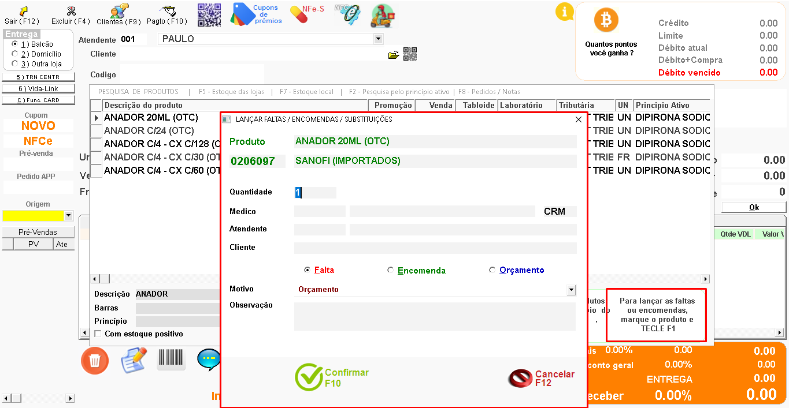
A opção de Encomendas/Faltas tem como objetivo principal gerenciar a reposição de produtos em falta no estoque e as encomendas solicitadas pelos clientes. Por meio dela, é possível visualizar, filtrar e realizar ações relacionadas a faltas e encomendas, garantindo a disponibilidade dos produtos para os clientes.
Como usar:
-
Período entre: Selecione a data para a pesquisa e marque as opções de faltas e encomendas. Também é possível filtrar itens já vinculados a pedidos anteriores, não vinculados, ou ambos.
-
Clique em "Pesquisar": Todas as faltas e encomendas no período selecionado serão exibidas.
-
Clique em Transferir itens para o pedido para adicionar os produtos desejados à sua lista de pedidos.
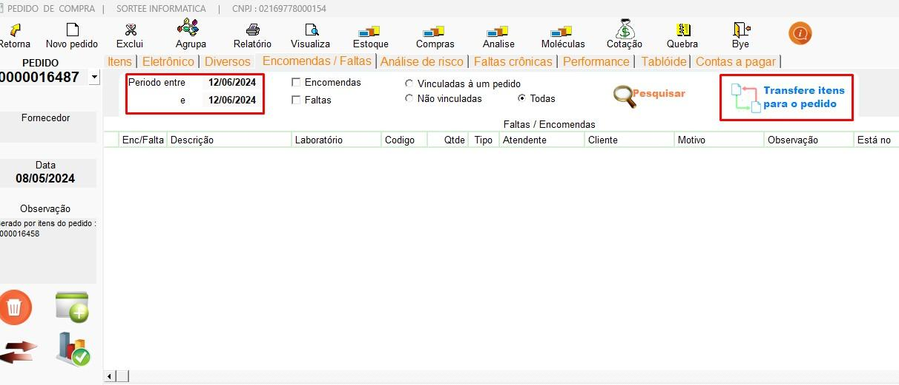
+ Aba Análise de Risco
Esta seção da ferramenta tem como objetivo ajudar a identificar produtos que podem gerar prejuízos para a empresa. Por meio de uma análise detalhada, o sistema identifica itens que estão parados no estoque por muito tempo, com pouca saída ou que representam um investimento financeiro alto e com baixo retorno.
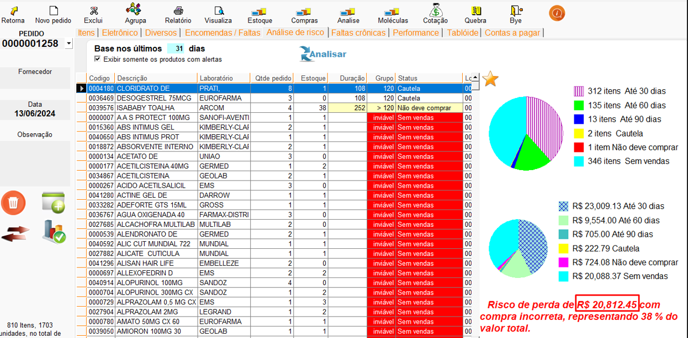
Como usar:
-
Identificação de Produtos com Alerta: Com base no histórico de movimentação, o sistema analisa vendas, estoque atual e outros dados para identificar produtos que represantam cautela ou prejuízos.
-
Cálculo do Risco: Para cada produto de risco identificado, o sistema calcula o valor potencial de prejuízo financeiro caso não seja vendido.
-
Visualização dos Resultados: Os produtos de risco são exibidos em uma lista com informações detalhadas, incluindo o valor estimado de prejuízo e os itens que requerem cautela, permitindo ao comprador analisar se deve adquirir os produtos.
+Aba Estoque de Lojas
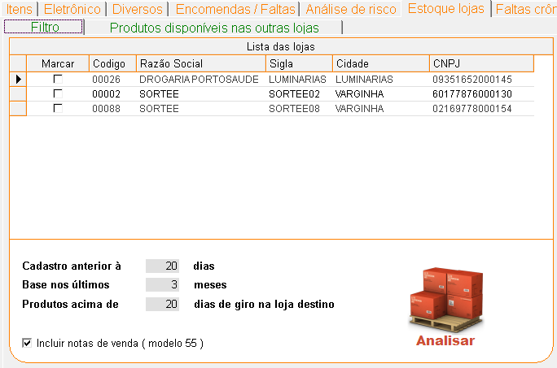
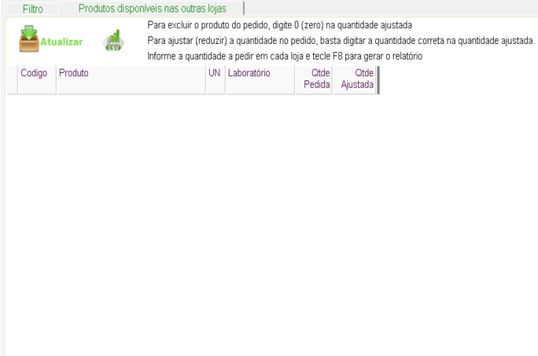
Como usar:
Essa aba serve como um centro de controle para visualizar e analisar o
estoque de diversas lojas
de forma integrada, facilitando a tomada de decisões sobre compras e transferências de produtos.
- Visualizar o Estoque: Tenha uma visão clara da
quantidade de cada produto
disponível em cada loja, facilitando a identificação de produtos em falta ou com excesso de
estoque.
- Customizar seus Pedidos: Ajuste as quantidades de cada
produto de acordo com a
demanda real de cada loja, garantindo que você não peça produtos em excesso nem deixe faltar
itens importantes.
- Excluir Produtos: Remova facilmente produtos do seu
pedido, caso necessário,
simplesmente digitando "0" na quantidade ajustada.
- Exportar seus Dados: Gere o relatório em formato CSV.
+Aba Faltas Crônicas
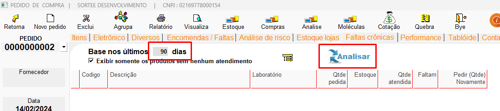
Esta aba foi desenvolvida para auxiliar na gestão de produtos que, apesar
de terem sido pedidos a
um fornecedor, não foram entregues no prazo esperado. Ao identificar essas "faltas crônicas", a
ferramenta permite que você direcione sua demanda para outros fornecedores, garantindo a
continuidade do seu estoque e evitando rupturas.
Como usar:
- Identificação de Faltas: O sistema monitora os pedidos
realizados e identifica
aqueles produtos que não foram entregues pelos fornecedores.
- Classificação como "Faltas Crônicas": Os produtos que
apresentam um histórico
de não entrega são classificados como "faltas crônicas" e destacados na aba.
- Geração de Novos Pedidos: Com base na lista de "faltas
crônicas", você pode
gerar novos pedidos para outros fornecedores, garantindo a reposição dos produtos em falta.
+Aba Performance
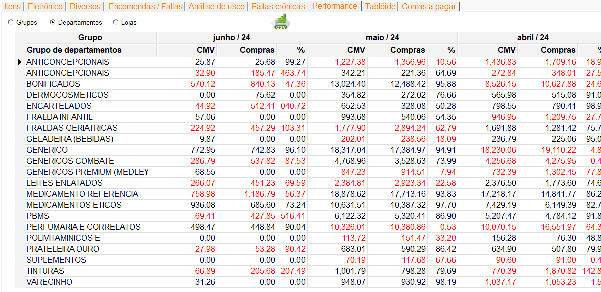
A aba "Performance" acompanha de perto o desempenho financeiro dos
diferentes grupos de produtos
ou departamentos da sua empresa. Com ela, você pode:
- Visualizar as Vendas e Compras: Acompanhe o valor CMV (Custo da mercadoria vendida) e das
compras realizadas em cada grupo, permitindo identificar os produtos e departamentos que geram
mais receita e os que demandam maior investimento.
- Comparar Períodos: Compare os resultados de diferentes
meses para identificar
tendências de crescimento ou queda nas vendas e compras, além de identificar possíveis
sazonalidades.
- Avaliar a Rentabilidade:Através do cálculo do CMV e do
percentual de compras,
você pode avaliar a rentabilidade de cada grupo e identificar oportunidades de otimização.
- Tomar Decisões Estratégicas:As informações apresentadas
na aba permitem tomar
decisões mais assertivas sobre a alocação de recursos, a definição de metas de vendas e a
otimização do mix de produtos.
OBS:CMV (Custo da Mercadoria Vendida): Nesta tela, o
sistema traz o CMV de
acordo com o agrupamento selecionado,
listando por departamento. Ele traz o valor das suas vendas e compras dentro de 3 meses,
auxiliando na hora
de enxergar se você está sobrecarregando seu estoque (comprando mais) ou se vai ter uma possível
falta de
produtos (vendendo mais do que compra).
Exemplo:
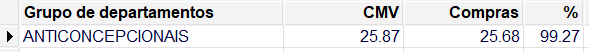
Neste caso, eu comprei 25,68 de anticoncepcionais e vendi 25,87,
representando 99,27% sobre as
vendas. A
conta é 25,87 / 25,68 * 100 = 99,2655, arredondando fica 99,27%
+Aba Tabloide
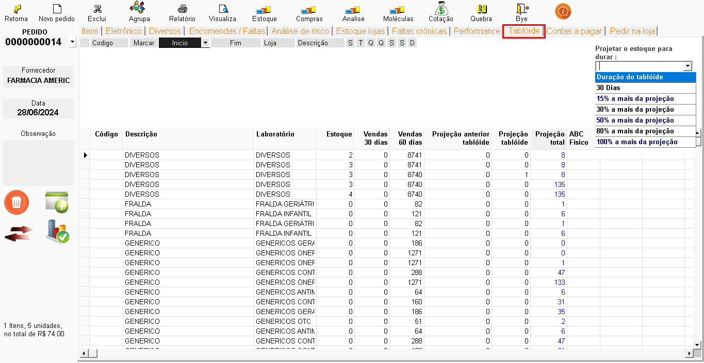
A aba "Tablóide" aproveita as promoções especiais e otimiza suas compras.
Ao selecionar um
tablóide, você adiciona automaticamente ao seu pedido um conjunto de produtos com condições
especiaisde preço.
Como usar:
- Identifique as Promoções: Navegue pela lista de
tablóides disponíveis para
encontrar a promoção que deseja.
- Selecione o Tablóide: Clique no tablóide desejado para
adicioná-lo ao seu
pedido.
- Verifique os Detalhes: Revise os produtos incluídos no
pedido e as condições da
promoção.
- Personalize o Pedido (opcional): Se necessário, ajuste
as quantidades ou exclua
produtos do pedido.
+Aba Contas a Pagar
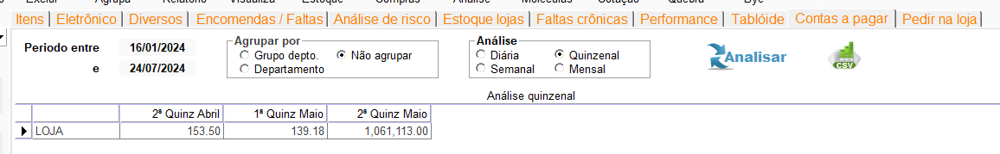
A principal função dessa aba é fornecer ao usuário uma visão clara e
atualizada do orçamento
disponível para realizar novas compras. Ao consultar essa aba, o responsável pela compra pode:
- Verificar o saldo disponível: Saber exatamente quanto
dinheiro pode ser
utilizado para adquirir novos produtos.
- Planejar as compras: Definir as prioridades e
quantidades a serem compradas com
base no orçamento disponível.
- Evitar ultrapassar o limite de gastos: Garantir que as
compras estejam
alinhadas com o orçamento pré-estabelecido.
+Aba Pedir na Loja
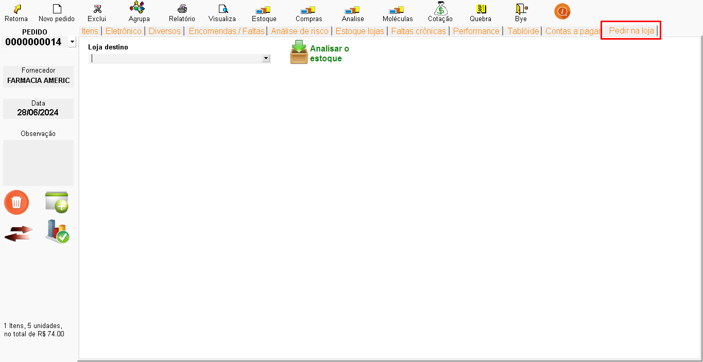
Nesse tópico é possível fazer um pedido em lojas integradas que possuem
produtos sobrando no
estoque, e podem ser enviados para outra farmacia.
Como usar:
- Seleção da Loja:O usuário escolhe a loja para a qual
deseja realizar o pedido.
- Busca e Adição de Produtos:O usuário busca os produtos
desejados e os adiciona
à lista de pedidos, definindo a quantidade desejada.
- Verificação de Estoque:O sistema consulta o estoque da
loja destino e informa a
quantidade disponível para cada produto.
- Geração da Nota Provisória:O usuário pode gerar uma nota
provisória para
revisar o pedido antes de enviá-lo.
- Envio do Pedido: Ao confirmar o pedido, as informações
são enviadas para a loja
destino, iniciando o processo de compra e entrega.